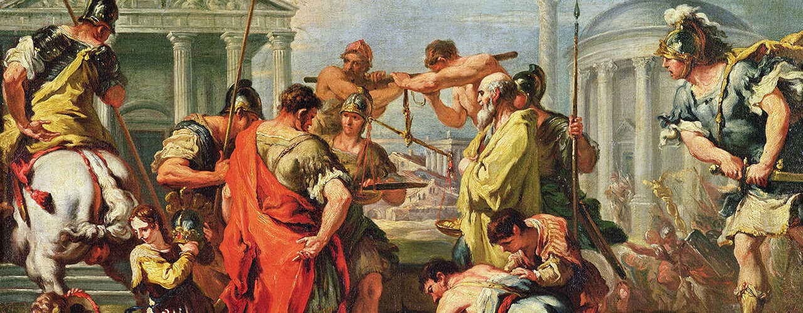
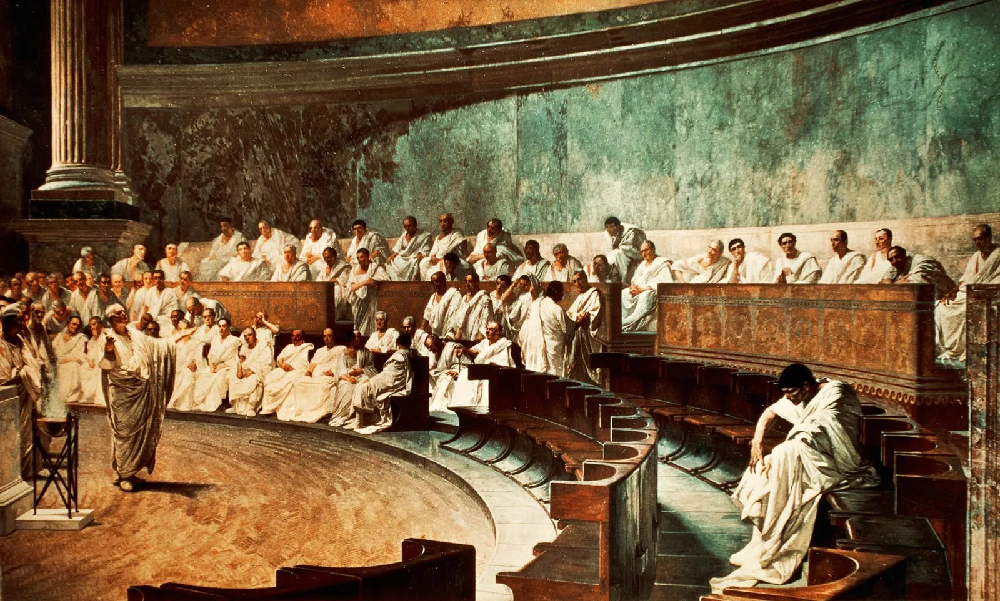
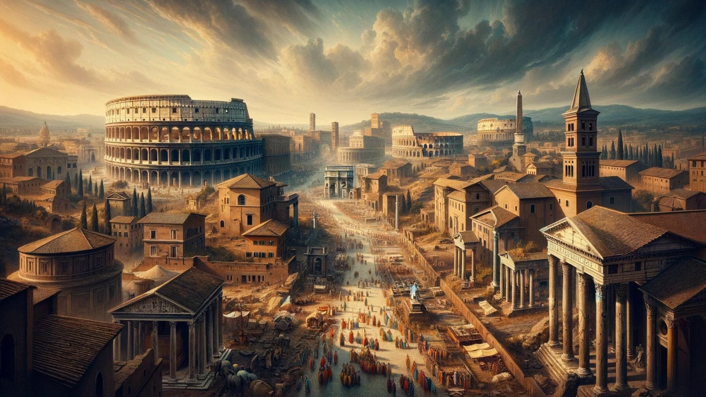

Ancient Rome

Ancient Rome refers to the civilization that originated on the Italian Peninsula and grew to dominate the Mediterranean world from the 8th century BCE until the fall of the Western Roman Empire in 476 CE. The history of Ancient Rome is marked by its transformation from a small city-state into a sprawling empire that exerted profound influence over politics, culture, and military affairs across Europe, North Africa, and the Near East. The civilization's legacy includes contributions to law, governance, engineering, architecture, and language, many of which continue to shape modern societies. Ancient Rome's societal structure evolved from a monarchy to a republic and eventually to an imperial autocracy, reflecting the dynamic political and social developments over its extensive history.
One of the most notable examples of Ancient Rome's grandeur is the city of Rome itself, particularly during the height of the Roman Empire. The city was renowned for its impressive architectural achievements, including the Colosseum, an amphitheater capable of seating up to 50,000 spectators for gladiatorial contests and public spectacles. The Roman Forum, the center of public life in ancient Rome, featured monumental structures such as the Senate House and the Arch of Titus. Rome's sophisticated infrastructure, including aqueducts like the Aqua Claudia, facilitated the supply of fresh water to the city, while the extensive network of roads, such as the Via Appia, connected the empire's vast territories. These achievements exemplify the engineering prowess and urban planning that characterized Roman civilization and left a lasting imprint on the subsequent development of urban infrastructure in Europe.
One of the most compelling reasons to study Ancient Rome is its profound impact on modern legal systems. Roman law, codified in works such as the Justinian Code, laid the groundwork for many legal principles that underpin contemporary legal systems in the Western world. Concepts such as contracts, property rights, and legal procedures were first developed by Roman jurists and have been adapted and integrated into modern legal frameworks. By learning about Ancient Rome, individuals gain insight into the origins of legal principles that govern various aspects of daily life and the judicial processes that maintain social order. Understanding these foundations helps appreciate how legal traditions have evolved and how they continue to influence contemporary legal practices.
Ancient Rome's architectural and engineering achievements are remarkable and offer valuable lessons for modern design and construction. The Romans pioneered the use of concrete, enabling the creation of enduring structures such as the Pantheon with its massive dome and the aqueducts that supplied cities with water. Their development of advanced construction techniques, including the use of arches, vaults, and domes, revolutionized architectural possibilities. Studying these innovations not only provides insight into the technical prowess of Roman engineers but also informs contemporary practices in architecture and construction. Understanding these historical achievements can inspire modern architects and engineers to draw upon ancient methods while exploring new possibilities in design and infrastructure.
The political evolution of Ancient Rome—from a monarchy to a republic and finally to an empire—provides valuable lessons in governance and political theory. The Roman Republic introduced concepts such as representative democracy, checks and balances, and the separation of powers, which continue to influence modern political systems. The transition to an imperial autocracy highlights the challenges of consolidating power and managing a vast empire. By studying Roman political structures, leaders, and events, individuals can gain insights into the dynamics of governance, the rise and fall of political entities, and the complexities of managing diverse populations. These lessons are applicable to contemporary political analysis and the development of effective governance strategies in modern states.
The Roman Kingdom marks the earliest phase of Roman history, beginning with the traditional founding of Rome in 753 BCE by Romulus, the city's legendary first king. During this period, Rome was a small city-state ruled by a succession of kings. The monarchy was characterized by its consolidation of power and establishment of social and political structures. The early Roman kings, such as Numa Pompilius and Tullus Hostilius, were instrumental in laying the foundations for Rome’s religious, legal, and military institutions. The kingdom era saw the creation of essential institutions like the Senate and the assembly of the people, which would later play crucial roles in the Roman Republic. The monarchy ended with the overthrow of the last king, Tarquin the Proud, around 509 BCE, which led to the establishment of the Roman Republic. More about Roman Kingdom
Cr.: novolearner.com
The Roman Republic era was characterized by a complex system of checks and balances, where power was divided between elected officials, including consuls and senators, and popular assemblies. This period saw Rome's transition from a local city-state to a dominant power in the Mediterranean. The Republic was marked by internal conflicts, such as the struggle between the Patricians (aristocratic families) and the Plebeians (common people), which led to significant political reforms. The Republic also expanded its territory through military conquests, including the defeat of Carthage in the Punic Wars, which secured Rome’s dominance over the western Mediterranean. The late Republic experienced social and political upheaval, including the rise of populist leaders like Julius Caesar, whose crossing of the Rubicon in 49 BCE precipitated the end of the Republic and the transition to imperial rule. More about Roman Republic
Cr.: Britannica
The Roman Empire represents the most extensive and influential period of Roman history, beginning with the rise of Augustus Caesar (Octavian) in 27 BCE, who became the first Roman Emperor. This period was marked by significant administrative and territorial expansion, with the empire reaching its zenith under Emperor Trajan in the early 2nd century CE. The Pax Romana, or Roman Peace, characterized the early Empire, during which the empire experienced stability, prosperity, and cultural flourishing. However, the Empire also faced challenges such as economic troubles, military defeats, and internal dissent. The Western Roman Empire gradually declined due to a combination of internal instability and external pressures, leading to its collapse in 476 CE when the last Roman emperor, Romulus Augustulus, was deposed. Meanwhile, the Eastern Roman Empire, known as the Byzantine Empire, continued to thrive until the fall of Constantinople in 1453 CE. The legacy of the Roman Empire profoundly influenced Western civilization, shaping legal systems, governance, language, and culture. More about Roman Empire
Cr.: Roman Empire Times
During the Roman Republic, Rome was governed by a system of checks and balances designed to prevent any single individual from gaining too much power. The Republic's political structure was characterized by its separation of powers among several key institutions. The Senate, composed primarily of Patricians, held substantial legislative and advisory authority, influencing major policy decisions and foreign affairs. The Republic also featured popular assemblies, like the Comitia Centuriata and Comitia Tributa, where Roman citizens could vote on laws and elect officials. The executive branch was led by two consuls, elected annually, who commanded the military and administered the state. This system aimed to balance power among the aristocratic class and the general citizenry, though internal tensions between Patricians and Plebeians often led to significant reforms, such as the creation of the Tribune of the Plebs, who had the power to veto legislation and protect the interests of the Plebeians.
The late Republic period was marked by increasing political instability and power struggles among Rome’s leading figures. The Republic's traditional political institutions struggled to cope with the growing demands of an expanding empire and internal social unrest. Prominent figures such as Julius Caesar, Pompey, and Crassus engaged in intense political maneuvering and military conflicts. Caesar's crossing of the Rubicon River in 49 BCE was a pivotal event, leading to a civil war that ended with his appointment as dictator. Although Caesar’s assassination in 44 BCE was intended to restore the Republic, it instead led to further chaos and the rise of his heir, Octavian. This power struggle ultimately culminated in Octavian becoming Augustus, marking the end of the Republic and the beginning of the Roman Empire.
Under Augustus (Octavian), the Principate period began, characterized by a more autocratic style of governance masked by the facade of Republican traditions. Augustus established himself as the Princeps, or "first citizen," consolidating significant power while maintaining the appearance of a Republic. This era saw the expansion and stabilization of the Empire, with Augustus implementing reforms that streamlined administration and increased central control. Emperors such as Trajan and Hadrian continued to build on Augustus’s legacy, focusing on military expansion, infrastructure development, and administrative efficiency. The Principate period is noted for its relative stability and prosperity, known as the Pax Romana, which lasted for over two centuries.
The Dominate period, initiated by Emperor Diocletian, marked a significant shift towards a more overtly autocratic and bureaucratic form of governance. Diocletian restructured the Empire, dividing it into Eastern and Western halves to better manage its vast territories. His reforms included a complex administrative structure with a heavily centralized control, including the establishment of a tetrarchy to share power among four rulers. This period also saw the rise of Constantinople as a new imperial capital under Constantine the Great, reflecting a strategic shift towards the Eastern Mediterranean. The Dominate era was characterized by increased autocratic rule, extensive bureaucracy, and military fortifications, setting the stage for the eventual decline of the Western Roman Empire in 476 CE.
The social structure of ancient Rome was distinctly hierarchical, with a clear delineation between the upper classes and the lower classes. At the top of the social pyramid were the Patricians, a wealthy and influential aristocratic class who held most of the political power and land. The Patricians were often members of noble families who traced their ancestry back to the early days of Rome. Below them were the Plebeians, who were common citizens and included a wide range of social and economic statuses from wealthy merchants to poor laborers. Although the Plebeians were numerous and played a crucial role in Roman society, they initially had limited political influence. Over time, the struggles between Patricians and Plebeians led to significant social and political reforms, including the creation of new political offices and rights for the Plebeians.
In Roman society, the family unit was central, with a strong emphasis on patriarchal authority. The paterfamilias, or male head of the household, held absolute authority over his family members, including his wife, children, and slaves. Women, though crucial in managing household affairs, had limited public roles and were generally excluded from formal political and legal rights. However, Roman women of higher social status could wield considerable influence within their families and in social circles. Marriage was an important institution, often arranged for political or economic advantages rather than personal choice. The Roman family structure was designed to reinforce social hierarchies and ensure the continuation of family legacies and wealth.
The economic life of ancient Rome was diverse, ranging from agriculture and trade to manufacturing and finance. Agriculture was the backbone of the Roman economy, with large estates, or latifundia, operated by wealthy landowners using slave labor. These estates produced grain, olive oil, and wine, which were crucial for Rome’s economy and sustenance. Trade also played a significant role, with Rome's strategic location facilitating commerce across the Mediterranean and beyond. Roman merchants and traders exchanged goods such as spices, silk, and precious metals with regions as far afield as India and China. Additionally, Rome’s bustling marketplaces, like the Forum, were centers of economic activity where goods were bought and sold, reflecting the city’s role as a commercial hub.
Public entertainment and cultural activities were integral to Roman social life and provided a means of social cohesion and public engagement. Gladiatorial games, chariot races, and theatrical performances were popular spectacles that drew large crowds and were often sponsored by wealthy individuals or emperors to gain favor with the public. The Colosseum and Circus Maximus are iconic examples of monumental structures built for these events. Additionally, Roman society valued cultural achievements, including literature, art, and architecture. Influential Roman authors such as Virgil and Ovid contributed to a rich literary tradition, while Roman architecture and engineering feats, like aqueducts and baths, showcased the Empire’s technological prowess and aesthetic sensibilities. Public baths, in particular, served as social gathering places and exemplified Roman advances in engineering and urban planning.
Education in ancient Rome was a complex system deeply intertwined with the social and political structures of the time. For the elite, education was a sophisticated affair, beginning at home with a private tutor who would instruct children in Latin and Greek grammar, literature, and moral philosophy. This early education laid the groundwork for more advanced studies in rhetoric and philosophy, essential for a career in public life and politics. Boys from affluent families progressed to grammaticus schools, where they studied classical texts and oratory to prepare for roles in public debates and governance. Girls from wealthy families also received education, though it was often focused more on domestic skills and moral instruction rather than public oratory. In contrast, education for the lower classes was rudimentary, providing basic literacy and practical skills needed for trades and labor rather than intellectual development. Roman intellectual life was heavily influenced by Greek culture, with philosophers like Seneca, Cicero, and Marcus Aurelius contributing significantly to moral philosophy and practical ethics. Stoicism was particularly influential, advocating for rationality and self-discipline. Roman advancements in science and technology were notable, with works by figures such as Vitruvius on architecture and engineering, and Galen on medicine, which built upon and expanded Greek knowledge. Roman contributions also extended to literature and the arts, with poets like Virgil, Horace, and Ovid producing works that explored themes of heroism, love, and human nature, and Roman art and architecture reflecting both aesthetic values and practical functionality. The educational system and intellectual pursuits of ancient Rome were integral to its culture, shaping its public life, governance, and artistic achievements, and leaving a lasting legacy that influenced subsequent civilizations.
In ancient Rome, religion was a central aspect of public and private life, intricately woven into the fabric of society and governance. The Roman religious system was polytheistic, encompassing a vast pantheon of deities and spirits that influenced various aspects of daily life, politics, and state rituals. The major gods included Jupiter, the king of the gods; Juno, his wife and goddess of marriage; Neptune, god of the sea; and Mars, god of war, among others. Public worship and state rituals were crucial for maintaining the favor of these deities and ensuring the stability and prosperity of the state. Priests and priestesses played significant roles in conducting sacrifices, ceremonies, and festivals that honored the gods and sought their protection and blessings. Additionally, the Romans practiced a form of ancestral veneration, honoring household spirits known as Lares and Penates, who were believed to protect the home and family. The transition from the Republic to the Empire saw the incorporation of deities from conquered territories, reflecting the empire's vast and diverse nature. Cults such as those dedicated to Mithras, a deity from the Eastern provinces, and the Egyptian goddess Isis, became popular among Roman citizens, often providing a sense of personal connection and salvation that traditional Roman religion did not fully address. These mystery religions and cults typically offered esoteric teachings, initiations, and rituals that promised spiritual benefits and a closer relationship with the divine. The rise of Christianity in the later Roman Empire marked a profound shift in religious dynamics, challenging traditional Roman religious practices and eventually becoming the state religion under Emperor Constantine in the early 4th century CE. This transition marked the end of pagan worship as the state-sponsored religion, leading to significant religious and cultural transformations throughout the empire. Overall, Roman religion was characterized by its inclusivity and adaptability, integrating a multitude of beliefs and practices that reflected the empire's complexity and diversity.
In ancient Rome, science was deeply integrated into practical applications and infrastructure, reflecting the Romans’ emphasis on utility and problem-solving. One of the most notable contributions to science from Roman times is in the field of engineering and construction. Roman engineers and architects excelled in developing advanced building techniques and materials, which significantly impacted urban planning and infrastructure. The construction of aqueducts, for instance, exemplified Roman ingenuity in harnessing gravity to transport water over long distances, facilitating the growth of cities and improving public health. The Pont du Gard in France and the Aqua Claudia in Rome are enduring testaments to their sophisticated understanding of hydraulics and materials science. Similarly, Roman roads, built with layers of materials for durability, demonstrated their advanced knowledge in construction techniques, enhancing military logistics, trade, and communication across the empire. The Roman concrete, a robust building material made from lime, volcanic ash, and aggregates, was a crucial development that allowed structures like the Pantheon’s dome to endure for centuries.
Roman contributions to medicine and anatomy also reflect their scientific achievements. Galen, a prominent Roman physician, made extensive contributions to the understanding of human anatomy and medical practices. His work, which included detailed descriptions of the human body's organs and systems based on dissection and observation, became the authoritative source on medicine for many centuries. Galen’s theories on the balance of bodily humors and the importance of diet and lifestyle in maintaining health were central to Roman medical practice and influenced later European medicine. Another significant Roman scientific endeavor was the study of natural history. Pliny the Elder’s “Natural History” was an ambitious work that sought to catalog all known knowledge about the natural world, including geography, botany, zoology, and mineralogy. Although not always scientifically accurate by modern standards, Pliny’s compilation provided valuable insights into the Romans' understanding of their environment and the natural resources available to them.
The field of astronomy in ancient Rome, while less innovative, involved the adaptation of Greek astronomical theories and models. Roman scholars such as Claudius Ptolemy contributed to this field with works like the “Almagest,” which was a comprehensive treatise on the geocentric model of the universe. Ptolemy’s work synthesized Greek astronomical knowledge and included detailed observations and mathematical models that influenced astronomical studies for centuries. Although the geocentric model was eventually replaced by the heliocentric model, Ptolemy’s work remained a cornerstone of astronomical theory in the Western world until the Renaissance. In summary, Roman science was characterized by its practical applications and adaptation of earlier Greek knowledge, with significant contributions to engineering, medicine, and natural history that had lasting impacts on subsequent scientific developments.
Ancient Roman philosophy, deeply rooted in the Greek tradition, evolved through various schools of thought that reflected the complexities and challenges of Roman life. One of the most influential philosophical schools in Rome was Stoicism, founded by Zeno of Citium. Stoicism, with its emphasis on virtue, rationality, and self-control, resonated with the Roman ideals of discipline and endurance. Prominent Roman Stoics such as Seneca, Epictetus, and Marcus Aurelius adapted Stoic principles to their personal and political lives, emphasizing the importance of inner tranquility and moral integrity amidst external chaos. Seneca, a statesman and advisor to Emperor Nero, wrote extensively on ethics and the nature of happiness, advocating for a life aligned with reason and virtue. His essays and letters, such as “Letters to Lucilius,” offered practical advice on achieving tranquility and resilience. Epictetus, a former slave turned philosopher, focused on the power of personal choice and the distinction between what is within our control and what is not. His teachings, compiled by his student Arrian in the “Discourses” and the “Enchiridion,” stressed the importance of accepting the natural order of the world and cultivating inner strength. Marcus Aurelius, a Roman Emperor and Stoic philosopher, authored the “Meditations,” a series of personal reflections that provide insight into his philosophical and ethical worldview. His writings emphasize the Stoic commitment to duty, rationality, and the acceptance of fate, providing a unique perspective on leadership and personal virtue.
Another significant philosophical school in ancient Rome was Epicureanism, founded by Epicurus, which emphasized the pursuit of pleasure and the avoidance of pain as the ultimate goals of life. Epicurean philosophy, though less politically influential than Stoicism, offered a counterpoint to the Stoic emphasis on virtue. Lucretius, a Roman poet and philosopher, was a key proponent of Epicureanism. His work “De Rerum Natura” (On the Nature of Things) provided a comprehensive exposition of Epicurean philosophy, combining natural science with ethical teachings. Lucretius argued that understanding the natural world and dispelling irrational fears were crucial to achieving a pleasurable and tranquil life. His work was instrumental in promoting a materialistic and atomistic view of the universe, which later influenced Enlightenment thinkers. Additionally, the Roman philosopher Cicero played a crucial role in the dissemination of Greek philosophy in Rome. Although he did not establish a distinct philosophical school, Cicero’s writings were instrumental in introducing and integrating Greek philosophical ideas into Roman thought. His works, such as “On the Republic” and “On the Laws,” explored themes of justice, politics, and ethics, and his adaptation of Greek philosophy reflected his interest in applying philosophical principles to practical and political matters. Cicero’s synthesis of Stoicism, Academic Skepticism, and other Greek schools contributed to the development of Roman political and ethical philosophy.
In addition to Stoicism and Epicureanism, Neoplatonism emerged as a significant philosophical movement in the later Roman Empire. Founded by Plotinus, Neoplatonism built upon the ideas of Plato and emphasized the existence of a single, transcendent principle known as the One or the Good. Plotinus’s writings, compiled by his student Porphyry in the “Enneads,” explored the nature of reality, the relationship between the One and the material world, and the process of spiritual ascent. Neoplatonism influenced early Christian thought and contributed to the development of metaphysical and mystical ideas in late antiquity. The integration of Neoplatonic ideas with Christian theology, especially through the works of Augustine of Hippo, shaped the philosophical landscape of the medieval period. Roman philosophy, through its engagement with Greek traditions and its development of distinct schools of thought, left a lasting legacy on Western intellectual history, influencing subsequent philosophical, ethical, and theological developments.
Ancient Rome's contribution to the development of legal and governance systems remains profoundly influential. The Roman legal framework, epitomized by the "Corpus Juris Civilis" (Body of Civil Law) compiled under Emperor Justinian, laid the foundation for many modern legal systems. Roman law emphasized principles such as equality before the law, property rights, and the protection of personal freedoms. The concept of "innocent until proven guilty" and the codification of laws to ensure consistent justice were pioneering. This legal tradition has significantly shaped contemporary legal systems, emphasizing fairness, transparency, and the rule of law. Understanding Roman legal principles is essential for appreciating how modern legal systems evolved and the importance of maintaining justice and equity in governance.
Ancient Rome's engineering and architectural achievements were monumental, showcasing the Romans' innovative prowess and practical ingenuity. Structures such as the Colosseum, aqueducts, and the Pantheon exemplify advanced engineering techniques and architectural sophistication. The use of concrete, the development of the arch, and the construction of vast infrastructures like roads and aqueducts not only facilitated the growth of the Roman Empire but also influenced subsequent architectural and engineering practices. These advancements underscore the significance of engineering in building resilient infrastructure, enhancing urban development, and fostering connectivity. Learning from Roman engineering can inspire modern innovations and improvements in infrastructure design, emphasizing durability and functionality.
Ancient Rome demonstrated the impact of civic engagement and the role of public institutions in shaping society. The Roman Republic, with its system of elected magistrates, assemblies, and the Senate, highlighted the importance of participatory governance and accountability. Citizens had the opportunity to influence public decisions and policies, setting a precedent for democratic principles. Public institutions, such as baths, forums, and marketplaces, facilitated social interaction, civic life, and economic activities. The emphasis on civic responsibility, public service, and the functioning of democratic institutions in Rome offers valuable lessons for fostering active citizenship and the role of public institutions in promoting societal well-being and governance.
Roman culture and education significantly impacted Western civilization, shaping intellectual and cultural traditions. Roman education emphasized rhetoric, philosophy, and literature, reflecting the value placed on eloquence, critical thinking, and civic duty. Roman contributions to literature, such as the works of Virgil, Cicero, and Ovid, enriched Western literary traditions and provided insights into Roman society and values. The integration of Greek cultural and intellectual traditions into Roman education underscores the importance of cultural exchange and the pursuit of knowledge. Understanding Roman cultural and educational practices highlights the enduring influence of classical education on modern learning and intellectual development.
The rise and fall of the Roman Empire offer critical lessons on the challenges of imperial governance and the complexities of managing a vast and diverse empire. The Roman Empire's expansion led to the integration of diverse cultures, economies, and political systems, presenting challenges in governance, administration, and military management. Issues such as economic disparity, administrative inefficiencies, and external pressures contributed to the empire's decline. Analyzing the factors that led to the Roman Empire's challenges and eventual fall provides valuable insights into the dynamics of imperial rule, the management of diverse territories, and the importance of adaptability and reform in sustaining complex political systems. These lessons remain relevant for understanding the dynamics of modern states and empires.
Ancient Rome's architectural and engineering innovations were pivotal in shaping the development of urban infrastructure. One of the most significant achievements was the construction of aqueducts, such as the Aqua Appia and Aqua Claudia, which transported water from distant sources to cities, revolutionizing public health and sanitation. The Romans also perfected the use of concrete, enabling the construction of monumental structures like the Pantheon with its massive dome and the Colosseum, an amphitheater capable of seating up to 50,000 spectators. Their development of the arch and vault, including the iconic Roman arch, not only enhanced structural stability but also allowed for the creation of expansive and durable public buildings and infrastructures. These innovations set new standards in engineering and architecture, influencing subsequent building practices across the Western world.
The Roman legal system has had a profound and lasting impact on the development of Western legal traditions. The "Corpus Juris Civilis," or "Body of Civil Law," compiled under Emperor Justinian in the 6th century CE, is one of the most comprehensive legal codifications in history. It organized and systematized Roman law into a coherent and accessible format, influencing the development of modern legal systems across Europe and beyond. Roman law introduced concepts such as legal equality, property rights, and contractual obligations, many of which are foundational in contemporary legal frameworks. The principles of Roman law, including the presumption of innocence and the right to a fair trial, continue to underpin legal systems worldwide, demonstrating Rome's enduring influence on justice and governance.
Roman society was characterized by a complex social hierarchy and a range of social classes, from the patricians (aristocratic families) to the plebeians (common citizens) and slaves. The Roman Republic and later the Roman Empire were marked by significant social stratification, with political and social privileges often concentrated in the hands of the elite. Roman society also saw the development of various social institutions, such as the patron-client system, where patrons provided protection and resources in exchange for clients' support and services. Despite these social divisions, Roman culture was marked by an emphasis on civic duty, public service, and the pursuit of personal honor. The social dynamics of Rome influenced its political structures, economic activities, and cultural developments, reflecting the interplay between social organization and governance.
Roman contributions to literature, philosophy, and the arts were significant and have left a lasting legacy. The works of Roman authors such as Virgil, whose epic "Aeneid" celebrated Rome's origins and values, and Cicero, whose writings on rhetoric and philosophy shaped Western thought, are central to classical literature. Roman intellectuals, including philosophers like Seneca and Epictetus, contributed to Stoic philosophy, emphasizing ethics, personal virtue, and resilience. Roman art and architecture, characterized by realistic portraiture, intricate mosaics, and grand public buildings, reflected the empire's values and aspirations. These cultural and intellectual achievements not only enriched Roman society but also profoundly influenced subsequent European and Western cultural and intellectual traditions.
The decline and fall of the Roman Empire is a significant historical event that provides insights into the complexities of imperial governance. The empire faced numerous challenges, including economic troubles, military defeats, political corruption, and administrative inefficiencies. Internal strife, such as civil wars and power struggles, weakened the empire's cohesion and stability. Additionally, external pressures from barbarian invasions and the rise of competing powers further eroded Roman control. The eventual division of the empire into Eastern and Western halves, and the fall of the Western Roman Empire in 476 CE, marked the end of one of history's most influential empires. The causes of Rome's decline offer valuable lessons on the vulnerabilities of complex political systems and the factors contributing to the rise and fall of empires.
1. How did the Hubble Deep Field observation in 1995 change our understanding of the universe?
2. Describe one contribution of ancient Babylonians to early astronomy.
3. Explain the impact of the Islamic Golden Age on the development of astronomy during the medieval period.
4. How did the heliocentric model proposed by Copernicus revolutionize our understanding of the solar system?
5. What are some of the key research areas in contemporary astronomy, and why are they significant?